#7211 Die Poesie des Unendlichen
Alternativ: The Man Who Knew Infinity
 gesehen am 06.03.2018
gesehen am 06.03.2018

 IMDB-Wertung: 7.2 / 10
IMDB-Wertung: 7.2 / 10  Metascore: 0
Metascore: 0 
Das koloniale Indien des Jahres 1913: Srinivasa Ramanujan ist 25, einfacher Büroangestellter – und ein genialer, intuitiver Mathematiker. Doch weder Familie noch Vorgesetzte würdigen bzw. erkennen, welche Fähigkeit Srinivasa hat. Er wendet sich an den britischen Mathematikprofessor G. H. Hardy, der am Trinity College in Cambridge arbeitet. Hardy merkt schnell, dass ihn ein großes Talent kontaktiert hat. Der Professor holt Srinivasa nach England, gegen Widerstände akademischer Kollegen, und das junge Mathegenie macht Theorien zu Formeln, nach denen die Mathematik nicht mehr so ist wie davor. Doch Srinivasa, der seine Frau Janaki in Indien zurückließ, ist auch im neuen Land ein Außenseiter. Schwer hat er dafür zu kämpfen, seine Ideen in einem abweisenden, elitären Kollegenkreis durchzusetzen, zumal auch die Gesundheit bald streikt...
Jahr: 2015
Dauer: 103 Minuten
FSK: 6
Land: England Studio: Wild BunchTonspuren: DD5.1 - ,
Untertitel: Deutsch,
Auflösung: 1080p (1920x804) Größe: 4618 MB
Genre: Drama, Biographie
Regisseur: Matt Brown
Drehbuch: Matt Brown
Soundtrack:
Darsteller:
 Jeremy Irons als G.H. Hardy
Jeremy Irons als G.H. Hardy- 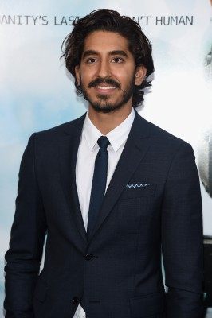 Dev Patel als S. Ramanujan
- 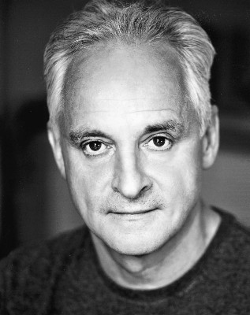 Malcolm Sinclair als Professor Cartwright
- 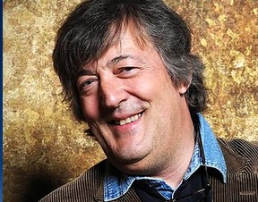 Stephen Fry als Sir Francis Spring
- Devika Bhise als Janaki
- Pádraic Delaney als Beglan
- 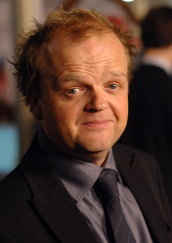 Toby Jones als Littlewood
- 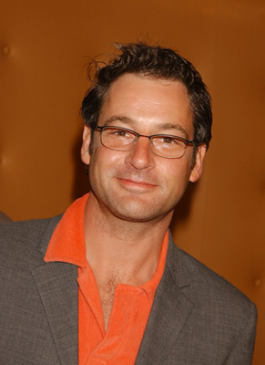 Jeremy Northam als Bertrand Russell
 Richard Cunningham als Hobson
Richard Cunningham als Hobson- 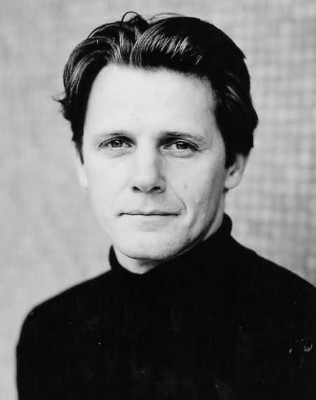 Anthony Calf als Howard
- 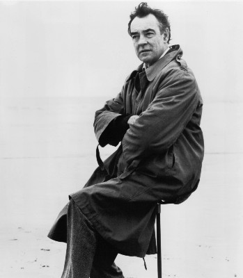 Richard Johnson als Vice Master Henry Jackson
- 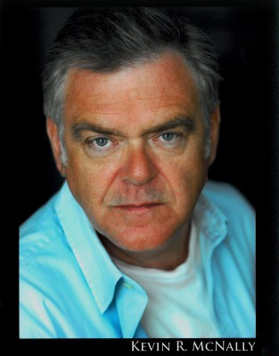 Kevin McNally als Major MacMahon
- Dominic Cazenove als Waiter
- Shazad Latif als Chandra Mahalanobis
- Nicholas Agnew als Andrew Hartley
- Roger Narayan als Scribe
- Alan Booty als Grocer
- Shenagh Govan als Postal Worker
- 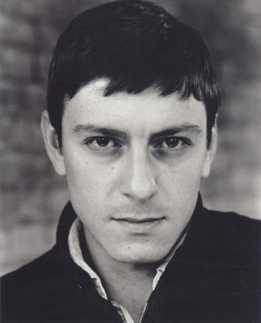 Enzo Cilenti als Doctor
- Elaine Caulfield als Hospital Nurse
- Alex Bartram als Hospital Doctor
- Roman Green als Wounded Soldier , uncredited
- Eleanor Inglis als Ward Sister , uncredited
- 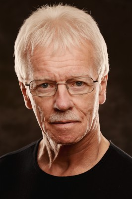 Patrick Carney Junior als Fellow of the Royal Society. , uncredited
- Arthur Wilde als Patient , uncredited
- Raghuvir Joshi als Narasimha
- Dhritiman Chatterjee als Narayana Iyer
- Arundathi Nag als Komalatammal
- 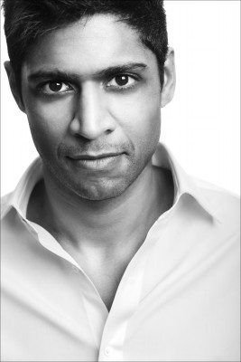 San Shella als Dr. Muthu
- Thomas Bewley als Baker
- Pip Barclay als Student
- David Shaw Parker als Porter
- Alexander Forsyth als Cadet
- Christopher Ravenscroft als J.J. Thompson
- James Francis Andrews als Passer-by & Soldier , uncredited
- Alan Bentley als Fellow , uncredited
- 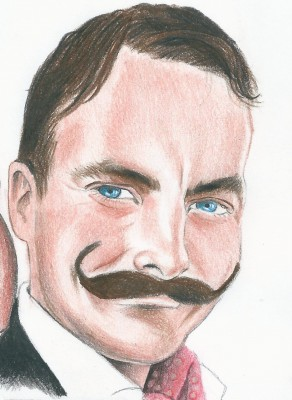 Alexander Cooper als Stretcher bearer , uncredited
- Devlin Lloyd als Student / Cadet , uncredited
- Jack Philips als Student Bully & Soldier , uncredited
- Warren Rushton als Taxi driver , uncredited
- Imogen Sage als Nursie , uncredited
- James Thomas Scott als Fellow , uncredited
Datei: X:\2015(N-Z)\Poesie des Unendlichen, Die (2015, FSK6, 1920x804).mkv seit 09.10.2017
Festplatte: HD 2015(A-Z)
 Es gibt insgesamt 161 Filme in der Gruppe '2015(N-Z)'
Es gibt insgesamt 161 Filme in der Gruppe '2015(N-Z)'